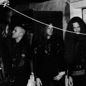
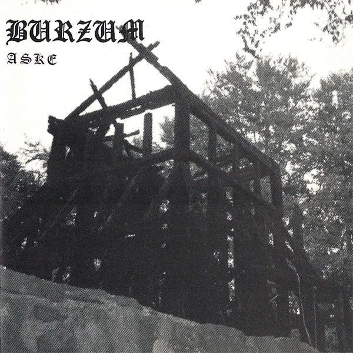
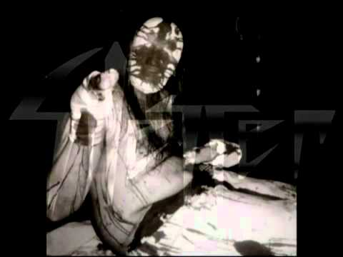
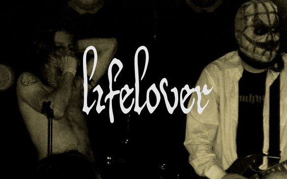
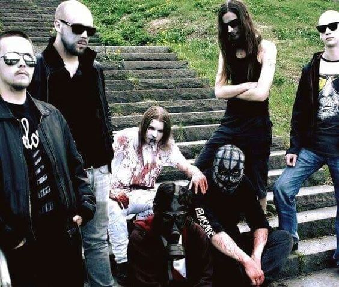

Bem vindo ao Suicidal Metal Inferno, nessa variação da black metal inferno, apresentar-lhes-ei
o gênero mais obscuro do mundo: O depressive suicidal black metal, um subgênero do black metal voltado para a depressão, angústia,
melancolia, letargia e tudo que é intrínseco ao lado negro do sentimento humano.
A história do Depressive Suicidal Black Metal

Depressive Suicidal Black Metal, encurtado como Depressive Black Metal e abreviado por DSBM, é uma vertente musical do Black Metal. As primeiras bandas com características do que veio a ser o DSBM, surgiram na segunda metade dos anos 90, mas somente após o ano 2000 que algumas bandas começaram a rotular o som que faziam como Depressive Black Metal.
As bandas que serviram como influência para o DSBM foram Burzum, Manes, Strid e Bethlehem. O álbum Hvis Lyset Tar Oss de 1992 do Burzum é considerado um importante precursor do DSBM. Todo o projeto Burzum é considerado uma influência importante a esse subgênero do Metal Negro. Seu EP Aske foi caracterizado por um ritmo mais lento, gritos ecoando e mantendo ritmos de bateria simples com linhas de guitarras que iriam se espalhar através do Depressive Black Metal. Bandas que vieram a seguir com sons obscuros e mórbidos como Nortt, Shining e Silencer se referem a Hvis Lyset Tar Oss como principal influência para o som que começavam a fazer. O músico Nortt fala de uma "base musical direta" que, em particular, Burzum teria previsto para o projeto Nortt. Niklas Kvarforth cita Burzum como influência fundamental para o estilo do Shining. E o guitarrista Leere destaca Hvis Lyset Tar Oss como uma importante fonte de idéias para as linhas de guitarra que ele criou para o Silencer.


A partir da segunda metade dos anos 90, diferentes bandas começaram a surgir com letras abordando a depressão, suicídio, crise existencial, decepções, traumas, forte desejo de morrer, bem como os transtornos mentais no geral. Assim, o DSBM se consolidou como um subgênero do Metal, ou mais precisamente, do Black Metal.
Os canadenses do Malvery e os suecos do Silencer estão entre as primeiras bandas a se concentrar nos aspectos suicidas e depressivos do Black Metal. Ambas as bandas uniram a atmosfera apresentada com letras focadas em autoflagelação, suicídio e depressão. Musicalmente, no entanto, Malvery se concentrava numa sonoridade mais próxima do Death Metal, enquanto Silencer do Black Metal, com o uso ocasional de guitarras limpas e linhas de piano. Nattramn é visto como inovador nesse período. O Silencer enfatizava a natureza de seus gritos estridentes, de alguém que estava sofrendo e sendo atormentado incansavelmente. Em 1999, LeChâtier, vocalista do Malvery, suicidou-se. O álbum de estréia do Malvery, chamado Mortal Entrenchment In Requiem, foi lançado postumamente. Já Nattramn, foi internado em um hospital psiquiátrico na cidade de Växjö, logo após o lançamento do álbum Death - Pierce Me. A banda que, além de Nattramn, tinha Leere como membro, encerrou atividades após esse evento. Uma foto de Nattramn acabou sendo disseminada junto do álbum. Nela, ele se encontra com uma máscara ensanguentada e com bandagens manchadas nas mãos, nas quais aparecem pés de porco amarrados. Propagou-se que Nattramn se torturava durante as gravações das músicas e acabou amputando as mãos para substituí-las pelos pés de porco. Mas o que ele fez foi amarrar com as bandagens os pés de porco às mãos. O álbum Death - Pierce Me foi visto como expressão pura de dor, depressão e loucura.
Lifelover e o narcotic metal

Surgida em 2005, na cidade de Estocolmo, Suécia, da união de Jonas Bergqvist (B) e Kim Carlsson,
amigos de longa data, a banda trazia uma sonoridade diferente do que se encontrava dentro da
vertente mais depressiva do metal negro até então. Segundo ambos, eles estavam, simplesmente,
se autodestruindo dentro do quarto, bebendo cerveja, num dia qualquer e, de repente, pegaram uma guitarra cada um e começaram a tocar. Até então nunca tinham feito isso juntos, e começaram a tocar sem pensar no que tocar, apenas deixaram os acordes irem saindo, espontaneamente. Jonas ligou o gravador e a partir disso surgiu uma demo com duas longas faixas ambientes, apenas com guitarras soando de forma etérea. Aqui surge a primeira ironia, algo que a banda passaria a usar constantemente. Essa demo foi chamada de 'PROMO', mas ela nunca foi um material promocional realmente. Foi mais uma espécie de vazão para as emoções que os amigos deixaram fluir. Embora não tenha nenhuma relação com o som que viriam a criar e se tornar uma marca registrada da Lifelover, essa demo foi essencial para surgir a banda. Em 2006 foi lançado Pulver, o álbum de estréia e que foi algo diferente do que o público estava acostumado a escutar, quando se falava em DSBM. Mas ele passou a ser bem aceito, justamente, pela dualidade que a banda trouxe e a marcou. Músicas mais agitadas, até mesmo dançantes, mas com letras extremamente mórbidas, melancólicas, abordando a morte, a depressão, a ansiedade, a monotonia e apatia urbana e o suicídio. As músicas também são carregadas de sarcasmo e ironia, e a faixa que abre o álbum é o exemplo perfeito disso. Com uma sonoridade que pode fazer qualquer ouvinte querer balançar o corpo, quando se presta atenção ao conteúdo da letra, as coisas podem chocar e fazer o ouvinte pensar a respeito da mensagem. Nackskott conta uma história bastante abstrata de alienação e repugnância com as normas reinantes da sociedade moderna e que, por consequência, sopra pessoas inocentes para a sua desgraça. Fala sobre abuso infantil e perda da inocência de uma criança que, no futuro, se perde em si mesma e vive uma vidinha medíocre onde há apenas dor, tristeza e desesperança. A música termina com o sample de uma canção infantil tradicional sueca (essa é outra característica que se tornou presente em muitas músicas da banda, o uso de sample, geralmente de programas infantis onde há canções suecas alegres). A 2º faixa, M/S Salmonella, também tem uma sonoridade mais agitada, mas, quando se atenta para o conteúdo da letra as coisas se tornam mais sérias. Ela fala sobre um indivíduo que foi para longe de tudo e todos que conhecia e, em outra cidade, ele está prestes a dar fim em sua vida.

Ele se autodestrói de todas as formas possíveis. Ingere álcool em excesso, come comidas gordurosas, malcozidas, se automutila. Ele não se importa com mais nada. No dia seguinte, acorda com os sintomas de uma terrível ressaca e intoxicação alimentar (Salmonella), mas esses sintomas apenas se somam aos sintomas de sua mente adoecida, e de seu corpo fragilizado, que ele já carregava há anos. Seu corpo já era tido como uma podridão, então, nada muda tanto assim para ele. Ouve-se o sample com barulhos que vêm de uma televisão, representam a rotina do mundo, pessoas em algum tipo de manifestação, mas isso não gera nada no indivíduo, ele não se importa com mais nada, nem sobre si, nem sobre o que ocorre ao seu redor. Ele, apenas, vai dar um fim em si mesmo. De forma irônica (ou não) ele manda um cartão postal, escrito apenas “adeus”, a uma pessoa, talvez, para a pessoa que ele queira avisar sobre sua morte e era a única que se preocupava com ele em vida, ou, talvez, ele esteja mandando de forma irônica para alguém que cooperou para ele se sentir uma merda durante sua vida toda e ele gostaria que essa pessoa soubesse que, finalmente, ele havia finalizado com sua vida.
No dia 10 de setembro de 2011, a banda Lifelover se encerra após Jonas Bergqvist (B) morrer de overdose de comprimidos.
O membro Kim Carlsson seguiu produzindo músicas com outros projetos, dentre eles o Hypothermia, projeto hoje em dia tão importante quanto o Lifelover.